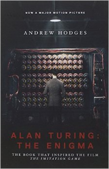
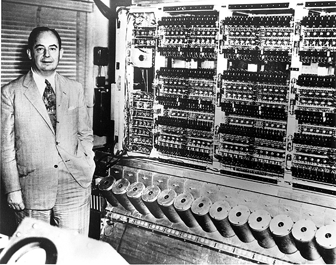

图灵的光环
仿佛全世界的人都知道，图灵（Alan Turing）是个天才，是他创造了计算机科学，是他破解了德国纳粹的Enigma密码，是他拯救了全人类。然而根据自己一直以来对图灵机等计算模型的看法，加上一些最近解密的二战历史资料，我发现图灵本人的实际成就，相对于他所受到的崇拜，其实相差甚远。
由于二战以来各国政府对于当时谍报工作的保密措施造成的事实混淆，再加上图灵的不幸生世所引来的同情，图灵这个名字似乎拥有了一种扑朔迷离的光环。人们把很多本来不是图灵作出的贡献归结在他身上，把本来很平常的贡献过分地夸大。图灵的光环，掩盖了许多对这些领域做出过更加重要贡献的人。
图灵传

在图灵诞辰一百周年的时候，人们风风火火的召开各种大会，纪念这位“计算机之父”。很多媒体也添油加醋地宣传他的丰功伟绩，说他救了上百万人的性命之类。当然，也有人抓住这个时机，给他写了一本传记，叫做《Alan Turing: The Enigma》。后来这本书被改编成了电影。
这传记看似客观，字里行间却可以感受到作者对计算机科学认识的肤浅，对图灵个人的膜拜和偏袒。作者俨然已经断定了图灵是个天才，仿佛他做的一切都是有理的，他做的不好的地方都是因为别人的问题或者风水不好。提到别人做的东西，尽是各种缺陷和局限性，不是缺陷也要说成是缺陷；提到图灵的工作，就是史无前例，开天辟地的发明。那种语气，仿佛别人都在偷窃图灵伟大的研究成果，都在利用他，欺负他似的。
如果你不想花钱买书，可以看看此书作者写的一个图灵简要生平，足以从中感受到作者的这种倾向。
我写这篇文章的很大一部分原因，就是因为这本传记。作者对图灵贡献的片面夸大，对其他一些学者的变相贬低，让我感到不平。图灵在计算机界的名声，本来就已经被严重的夸大和美化。现在出了这本传记和电影，又在普通人的心中加重了这层迷雾。所以我觉得有必要澄清一些事实，让人们不再被迷惑。
现在我想根据自己对一些专业知识和历史资料的了解，把自己对图灵的看法澄清一下。
密码学
很多人提到二战Enigma密码的故事，就会把功劳一股脑地归到图灵头上，以至于只字不提其他人。然而纸终究是包不住火的，最近解密的资料说明，图灵的工作其实大部分属于对以往工作的“改进”，而不是独创的发明。当年好些人对破解Enigma密码的贡献比图灵大很多，然而却很少有人听说过他们的名字。这是不公平的。
最近的多国间谍首脑会议，对一些二战历史资料进行了解密。你可以从这些信息发现，破解Enigma密码的大部分初创性工作，其实不是英国人，而是波兰人完成的。波兰人不但俘获并且复制了德国人的Enigma机器，而且发现了其中微妙的漏洞，制造了一种用于解密的机器叫做BOMBA)。英国的密码工作还没开始，波兰科学家们早已经可以破解德国陆军和空军的密码。
英国人的工作，其实是把波兰人送给他们的核心技术扩展到可以破解德国海军的密码。海军的密码比起陆军和空军的，其实大同小异。如果波兰没有被攻陷，海军的密码一样会被他们破掉。关于Enigma密码机器是如何工作，有什么特点和漏洞，海军的Enigma机器有什么不同，你可以参考这两个技术性的视频：[视频1][视频2]。
所以英国人（图灵是其中之一）所做的工作，其实是建立在波兰科学家的“初创性”工作之上，属于一种“改进”或者“优化”。波兰人其实没有遇到技术困难，但由于被德国侵略，波兰情报局决定把Enigma密码的关键技术送给英国和法国，希望得到他们的帮助。虽然最后是在英国的密码工作使二战得到了转机，但这并不应该掩盖波兰科学家做出了初创性工作，波兰人给了英国人最关键的技术这一事实。
英国所做的密码学工作虽然重要，但并不是初创性的。而图灵在其中的贡献，比起另外的一些科学家，其实也不是最关键的。由于密码学工作与间谍机关的紧密关系，很多做出过重大贡献的人，往往被政府隐姓埋名，甚至进行暗害，所以无法被公众关注。不过后来还是有人不顾自己的安危，公布了事实。这部BBC纪录片，记录了在Bletchley Park为破解Enigma密码做出了重大贡献的一个人，Gordon Welchman。他的贡献其实远超图灵，却几乎没有人知道他是谁。
说了这么多，回过头来想想，破解Enigma密码，管他是谁破的，真是那么重要的贡献吗？破了密码，就一定能打胜仗，就能拯救百万人的性命吗？请大家不要忘了，打仗还是要人来打的，不是敲敲键盘，拉拉电线就可以的。而且如果不破密码，盟军就真打不赢德国人，那上百万人就会死吗？请你们仔细想一下，这类说图灵“拯救了上百万人”的报道，是否真的合情合理？
如果破解Enigma密码是如此重要的贡献，那么为什么二战结束之后，英国政府会守口如瓶几十年，把在Bletchley Park的工作设为最高机密呢？这是因为，由于破解密码而战胜德国纳粹，其实是一种耻辱，而不是一种荣耀。你们身体太差，打仗打不赢人家，最后破了密码赢了，算什么好汉呢？
所以我觉得，有些人之所以现在鼓吹破解Enigma密码的故事，完全是在跟风炒作。现在计算机行业火了，所以之前的耻辱都不算耻辱了，公开当年鬼鬼祟祟破人家密码的故事，捧出几个“英雄”来，貌似还挺得意的样子 ;)
理论计算机科学
图灵被称为“计算机之父”，计算机科学界的最高荣誉，被叫做“图灵奖”（Turing Award）。然而如果你深入的理解了计算理论和程序语言理论就会发现，图灵对于理论计算机科学，其实没有深远的影响。
绝大部分计算机专业的人提到图灵，就会想起图灵机（Turing Machine）。稍微有点研究的人，可能知道图灵机与lambda calculus在计算能力上的等价性。然而在“计算能力”上等价，并不是说它们具有同样的“使用价值”，随便用哪一个都无所谓。科学研究有一条通用的原则：如果多个理论可以解释同样的现象，取最简单的一个。虽然lambda calculus和图灵机能表达同样的理论，lambda calculus却比图灵机简单和优雅很多。
计算理论（Theory of Computation）这个领域，其实是被图灵机给复杂化了。图灵机的设计是丑陋，复杂，蹩脚，缺乏原则的。图灵机的读写头，纸带，状态，进行的那些操作，把本来很简单的语义搞得异常复杂。图灵机的读写操作同时发生，这恰好是编程上最忌讳的一种错误，类似于C语言的i++。图灵机是如此的复杂和混淆，所以你看见一个图灵机，却很难看出它到底要干什么，你很难用它清晰地表达你的意思。这就是为什么几乎每个人上“计算理论”课程，都会因为图灵机而头痛。
相比之下，lambda calculus要简单和优雅很多，它是一个非常有原则的设计。Lambda calculus能清晰直接地显示出你想要表达的语义。对于现实的编程语言设计，系统设计，lambda calculus有着巨大的指导和启发意义。以至于很多理解lambda calculus的人都搞不明白，图灵机除了让一些理论显得高深莫测，还有什么存在的意义。然而图灵的名气真是莫名其妙的大，轻松地压倒了Church，以至于很多计算机行业的人一大把年纪了，还不知道Church是谁，他做了什么。
图灵机比起lambda calculus来说，其实算是一个历史的倒退。Lambda calculus诞生于图灵机好几年之前，它是逻辑学家Alonzo Church发明的。Lambda calculus被设计为一个通用的计算模型，并不是为了解决某个特定的问题而诞生的。1935年，Church写了一篇论文，显示了世界上存在数学无法解决的问题。1936年，Church使用之前发明的lambda calculus，证明了Hilbert的“可判定性问题”是不可解决的。其实这两篇论文没很大区别，只不过这次他专门针对Hilbert的那个著名问题进行论述。Church恐怕都没想过靠解决这问题成名，因为他设计lambda calculus，并不只是为了解决这一个问题。
在此一个月之后，当时还在剑桥读硕士的图灵，写了一篇论文，使用他设计的一种“计算机器”（后来被叫做图灵机）来证明同一个问题。图灵的论文后到一步，而且编辑从来没见过图灵机这样的东西。图灵机纷繁复杂，远没有lambda calculus来得优雅，你很难相信这机器的操作方式能够容纳“所有的计算”，所以编辑无法确定图灵的论述是否正确。Church恐怕是当时世界上唯一能够验证图灵的论文正确性的人。所以一番好心之下，编辑写了封信给Church，说：“这个年轻人很聪明，他写了一篇论文，使用一种机器来证明跟你一样的结果。他会把论文寄给你。如果你发现他的结果是正确的而且有用，希望你帮助他拿到奖学金，进入Princeton跟你学习。”
图灵就是这样成为了Church的学生，然而图灵心高气傲，恐怕从来没把Church当成过老师，倒总是觉得别人抢先一步，破坏了自己名垂青史的机会。跟Church的其它学生不一样，图灵没能理解lambda calculus的精髓，总是认为自己的机器才是最伟大的发明。进入Princeton之后，图灵不虚心请教，只是一心想发表自己的论文，想让大家对自己的“机器”产生兴趣，结果遭到很大的挫折。当然了，一个名不见经传的人，做了个怪模怪样的机器，说它可以囊括宇宙里所有的计算，你不被当成民科才怪呢！
在Church的帮助下，图灵的那篇论文（起名为“Computable Numbers”）终于发表了。Church还是很器重图灵的，他把图灵的机器叫做“图灵机”。不幸的是，论文发表之后，学术界对此几乎没有任何反响，只有两人向图灵索取这篇论文。图灵当然不爽了，于是后来就到处推销自己的图灵机，想让大家承认那是伟大的发明…… 最终，他成功了。
现在，图灵机已经被人们普遍接受作为计算模型，然而这并不能改变它丑陋和混淆的本质。图灵机的设计，其实是专门为了证明Hilbert的可判定性问题不可解决，它并不是一个实际可用的计算模型。图灵机之所以被人接受，很大部分原因在于人的无知。很多人（包括很多所谓“理论计算机科学家”）根本没好好学过lambda calculus，他们望文生义，以为图灵机是“物理的”，实际可用的“机器”，而lambda calculus只是一个理论模型。
事实恰恰相反：lambda calculus其实非常的实用，它的本质其实跟电子线路没什么两样！几乎所有现实可用的程序语言，其中的理论全都可以用lambda calculus解释，而图灵机却没有很多现实的意义，只能在计算理论中作为模型。另外一个更加鲜为人知的事实是：lambda calculus其实在这方面也可以完全取代图灵机，在计算理论里面充当模型。
很多人喜欢用图灵机，仿佛是因为用它作为模型，能让自己的理论显得高深莫测，晦涩难懂。普通的计算理论课本，往往用图灵机作为它的计算模型，使用苦逼的办法推导各种可计算性（computability）和复杂性（complexity）理论。特别是像Michael Sipser那本经典的计算理论教材，晦涩难懂，混淆不堪，有时候让我都怀疑作者自己有没有搞懂那些东西。
后来我发现，其实图灵机所能表达的理论，全都可以用更加简单的lambda calculus（或者任何一种现在流行的程序语言）来表示。图灵机的每一个状态，不过对应了lambda calculus（或者某种程序语言）里面的一个“AST节点”，然而用lambda calculus来表示那些计算理论，却可以比图灵机清晰和容易很多。在Indiana大学做计算理论课程助教的时候，我把这种思维方式悄悄地讲述给了上课的学生们，他们普遍表示我的这种思维方式更易理解，而且更加贴近实际的编程。
现在我举一个很简单的例子。我可以用一个很短的lambda calculus表达式，来显示Hilbert的“可判定性问题”是无解的：
Accept(λm.not(Accept(m,m)), λm.not(Accept(m,m)))
完整的证明非常短，请看我的另外一篇文章（英文）。这也就是图灵在他的论文里折腾了十多页纸写出来的东西。
我曾经以为自己是唯一知道这个秘密的人，直到有一天我把这个秘密告诉了我的PhD导师，Amr Sabry。他对我说：“哈哈！其实我早就知道这个，你可以参考一下Neil Jones写的一本书，叫做《Computability and Complexity: From a Programming Perspective》。（这本书现在已经可以免费下载）
此书作者用一种很简单的程序语言，阐述了一般人用图灵机来描述的那些理论（可计算性理论，复杂性理论）。他发现用程序语言来描述计算理论，不但简单直接，清晰明了，而且在某些方面可以更加精确地描述图灵机无法描述的定理。得到这本书，让我觉得如获至宝，原来世界上有跟我看法如此相似，对事物洞察力如此之高的人！
在一次会议上，我有幸地遇到了Neil Jones，跟他切磋思想。当提到这本书的模型与图灵理论的关系，老教授谦虚地说：“图灵的模型还是有它的价值的……” 然而到最后，他其实也没能说清楚这价值何在。我心里很清楚，他只是为了避免引起宗教冲突，或者避免显得狂妄自大，而委婉其词。眼前的这位教授，虽然从来没有得过图灵奖，他对于计算本质的理解，却比图灵本人还要高出很多。
电子计算机

很多理论计算机科学家喜欢说，大家现在用的电子计算机，只不过是一个Universal Turing Machine。那么现在让我们来看看，图灵本人真正对电子计算机的发展起过多大的作用吧。如果一个人对一个行业起过重大的作用，那我们可以说“没有他不行”。然而事实却是，即使没有图灵，计算机技术会照样像今天一样发展，丝毫不会受到影响。这是为什么呢？
最早的电子计算机，并不是图灵造出来的，而是电子工程师跟其他一些数学家合作的结果。根据老一辈工程师的叙述，图灵的工作和理论，对于现实的电子计算机设计，几乎没有任何作用。很多工程师其实根本不知道图灵是谁，图灵机是什么。他们只是根据自己对于“计算”的理解，设计和制造了那些电路。这就是为什么我们今天看到的电子计算机，跟图灵机或者图灵的其他理论几乎完全不搭边。
世界上最早的两台电子计算机，ENIAC和EDVAC，都是美国人设计制造的。其中，冯诺依曼（von Neumann）在EDVAC的设计中起了重要作用。在EDVAC诞生几个月之后，图灵被英国国家物理实验室（NPL）安排到一个新的项目。他们想赶上美国的计算机技术发展，所以想让图灵帮忙山寨一个EDVAC的“英国特色版本”。
图灵设计的机器叫做ACE（Automatic Computing Engine）。由于性格偏执，喜欢标新立异，不愿意借鉴别人的思想，再加上他本来就是理论家出身，图灵的设计跟当时（包括现在的）所有实用的计算机都有很大的差别。实际上，图灵设计ACE的思路，是根据自己之前的论文“Computable Numbers”里提到的“Universal Turing Machine”。使用如此丑陋而不实际的理论模型作为原型，这不是搞笑吗？图灵无法说服工程师们，这样的设计是可以用电子线路实现的。在这个时候，图灵的理论与现实的差距，充分的显示了出来，然而他却固执的抓住自己的想法不放。
图灵设计了这机器，NPL当时却没有能力制造它。于是他们求助于两位实现过计算机的工程师：F. C. Williams和Maurice Wilkes（后来EDSAC计算机的设计者），请他们帮忙实现图灵的设计。可是Williams和Wilkes都表示不喜欢ACE的设计，而且指出与图灵“性格不匹配”，不愿跟他合作，所以双双拒绝了NPL的邀请。
机器造不出来，图灵没事干，就开始设想这机器造出来之后的应用。最后他异想天开，扯上了“思考机器”（thinking machine）。所谓“图灵测试”（Turing Test），就是那时候提出来的。当然了，因为他扯到了“thinking machine”，就有后人把他称为人工智能（AI）的鼻祖。其实呢，图灵测试根本就不能说明一个机器具有了人的智能，它只是在测试一些肤浅的表象。扯远了。
无奈之下，图灵只好决定休假一年。在他休假的时候，ACE的工程终于展开了，它的硬件实现由NPL新成立的电子部门来完成。1950年，ACE运行了它的第一个程序。然而工程师们实现的ACE，完全偏离了图灵的设计，以至于实际的机器和图灵的设计之间，几乎没有任何相似性。
所以你看到了，图灵并不是一个实干家，他的双脚飘在半空中。他的理论并没有帮助造出实际可用的计算机，他对计算机的工程实现几乎没有任何有益的影响。可惜的是，有些人喜欢把实干家们千辛万苦造出来，真正可以用的东西，牵强附会地归功于某些高谈阔论的理论家，仿佛那是理论家的功劳似的。这也许就是为什么图灵被他们称为“计算机之父”吧。
如果对ACE和其它早期计算机感兴趣，你可以参考一下更详细的资料。
总结
我说这些是为了什么呢？我当然不是想否认图灵所做出的贡献。像许多的计算机工作者一样，他的某些工作当然是有意义的。然而那种意义并不像很多人所吹嘘的那么伟大，它们甚至不包含独特的创新。
我觉得很多后人给图灵带上的光环，掩盖了太多其它值得我们学习和尊敬的人，给人们对于计算机科学的概念造成了误导。计算机科学不是图灵一个人造出来的，图灵并不是计算机科学的鼻祖，他甚至不是在破解Enigma密码和电子计算机诞生过程中起最重要作用的人。
许许多多的计算机科学家和电子工程师们，是他们造就了今天的计算科学。他们的聪明才智和贡献，不应该被图灵的光环所掩盖，他们应该受到像跟图灵一样的尊敬。
希望大家不要再神化图灵，不要再神化任何人。不要因为膜拜某些人，而失去向另一些人学习的机会。